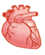
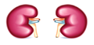
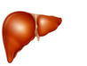
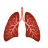

2017年北京市海淀区中考生物试题 · 选择题 第16、17、18、19、20题
16. 人体形成尿液的器官是（ ）
A.

B. 
C. 
D. 
17. 看书一个小时后，向远处眺望一会儿，可以预防近视眼，主要原因是（ ）
A. 使调节瞳孔中 神经得到休息
神经得到休息
B. 使视神经得到休息
C. 使视觉中枢得到休息
D. 使调节晶状体的肌肉得到放松
18. 下列反射活动中，属于人类特有的是（ ）
A. 看见食物分泌唾液B. 吃食物分泌唾液
C. 拍打叮咬自己的蚊虫D. 谈虎色变
19. 下列叙述中，不属于大熊猫的特征是（ ）
A. 细胞具有细胞壁B. 是生态系统中的消费者
C. 是多细胞生物D. 有能分解食物的消化系统
20. 海蜇和珊瑚虫排出消化后食物残渣的结构是（ ）
A. 肛门B. 口C. 胞肛D. 体壁